R
Red Team · VLAN 30
30.0.30.17 represents controlled adversary pressure. This is the exercise starting point from which learners begin tracking activity and understanding intent.
Cyber Range Training
Module Overview
The exercise flow is structured as Red Team → White Team → DMZ → Blue Team. VLAN context is shown throughout the module so learners can understand both the movement path and the security boundaries that defenders must monitor.

The White Team node supervises the exercise, maintains the trusted timeline, and helps validate whether observed traffic is expected training activity or a decision point for defender analysis.
Movement from the DMZ into Blue VLAN 20 is the most important change in risk posture because it represents a shift from exposed-zone activity to internal lateral movement.
30.0.30.17 represents controlled adversary pressure. This is the exercise starting point from which learners begin tracking activity and understanding intent.
10.0.10.26 is the control and observation layer. It supports exercise supervision, note logging, inject handling, and after-action reconstruction.
10.0.40.106 is the exposed service tier. It is the transition point where defenders start assessing whether activity is moving beyond expected DMZ interaction.
10.0.20.112 acts as the pivot host, while 10.0.20.20 and 10.0.20.25 represent protected internal webservers.
Interactive Walkthrough
Each stage explains the attacker objective, the boundary being crossed, and the signals that White and Blue teams should correlate. The visual uses animated packet flow across the amended VLAN-aware topology.
Stage 1
Use packet movement to understand when the investigation scope widens. Movement from DMZ VLAN 40 into Blue VLAN 20 is the critical transition from exposed-service activity to internal lateral movement risk.
Reliable detection comes from correlation. Align network flow, authentication events, endpoint activity, firewall / IDS evidence, and White Team notes to form a strong assessment.
Defender Lens
Good analysis does not rely on one alert. It combines traffic direction, VLAN context, authentication history, endpoint activity, and White Team control notes to interpret the full scenario correctly.
North-south traffic is movement into or out of a protected environment, such as Red Team activity entering the supervised range toward the DMZ. East-west traffic is movement between internal segments, such as DMZ VLAN 40 reaching Blue VLAN 20.
The White Team system 10.0.10.26 in VLAN 10 is intentionally placed between Red and DMZ in this design. It supports supervision, inject management, note-taking, and timeline validation.
Segmentation limits blast radius. Red VLAN 30, White VLAN 10, DMZ VLAN 40, and Blue VLAN 20 should have defined communication rules. Any unexpected cross-VLAN session requires explanation.
The pivot host provides a route toward targets that are not directly reachable from the earlier stages. In this lab, 10.0.20.112 becomes the bridge toward 10.0.20.20 and 10.0.20.25.
Assessment
Use this assessment to verify understanding of topology, VLAN boundaries, detection logic, and the role of the White Team in the amended framework.